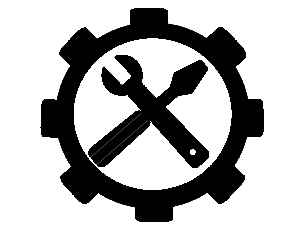

I am a data enthusiast, like looking at graphs. Chemistry & economics undergraduate, biophysical chemistry graduate. Self-taught programmer. Always enjoy learning.
I received a Master's in Chemistry at UVic. My area of research was the development of a multi-modual imaging platform to explore early bacterial cell adhesion and biofilm growth on silica substrates. This utilized background in biophysics, spectroscopy, programming, and engineering.
I studied for a dual Bachelor's in chemistry and economics at UBC-O, where I completed biophysical research on rolling cell adhesion. This sparked my interest in interdisciplinary fields of study and work, especially my huge interest in programming and analysis.
Outside of the lab, I enjoy programming random things, cooking experimental home-style foods, reading science and history books, and watching movies. See Github and below for selected projects. See my cooking portfolio for foods I cook.
Learner
I am a generalist with interests in a variety of fields in chemistry, programming, engineering, and economics. I consider myself a specialist in analytical chemistry and instrumentation. I enjoy learning at work and at home.
Teamworker
I have collaborated with others on research and school projects. Currently tasked with researching bacterial biofilms in a group which will utilize my findings for a stronger mechanistic understanding of cell adhesion on surfaces.
Technical
Attention to detail with experience in a variety of technical skills. This includes safe and proper handling procedures in instrumentation, analytical technique, lab benchtop work, electronics, programming.